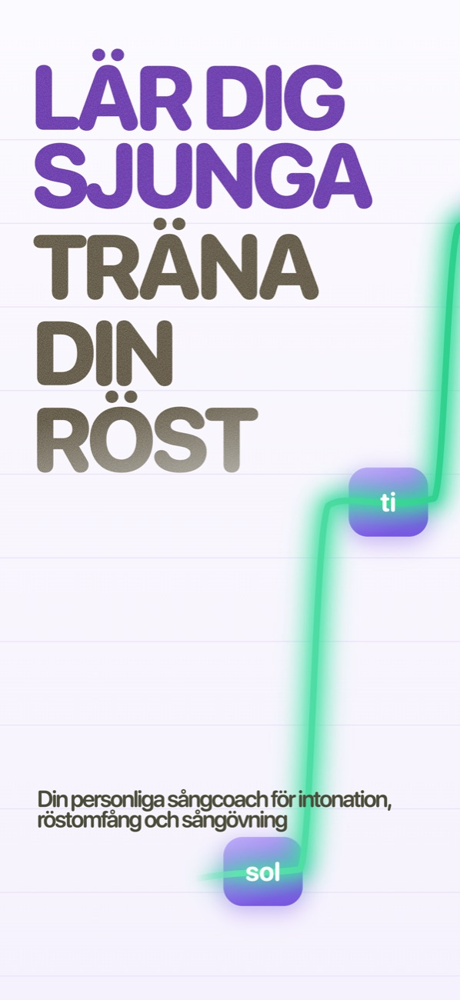
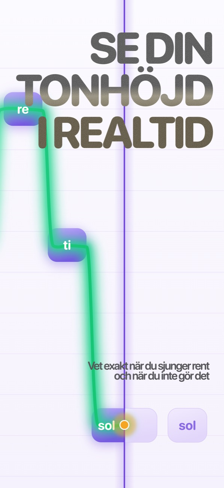
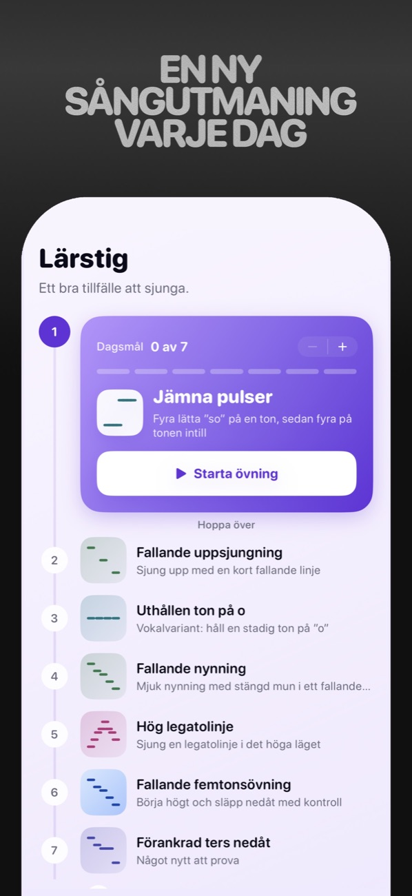
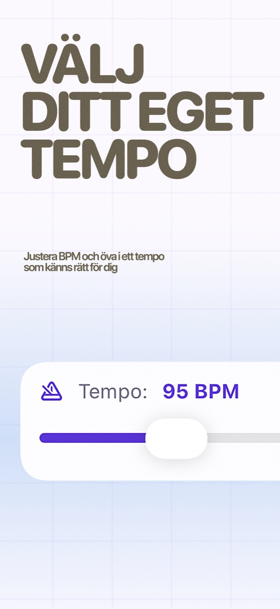

Fokusövning
Canu plockar ut stället där du fastnar, ger dig ingångstoner och låter dig sedan sjunga hela övningen igen.
Canu är din personliga sångcoach. Lär dig träffa tonerna säkert, utveckla din röst och sjung med mer självförtroende. Steg för steg.
Canu plockar ut stället där du fastnar, ger dig ingångstoner och låter dig sedan sjunga hela övningen igen.
Se vilken ton du sjunger och hur säkert du träffar den.
Mät ditt röstomfång live och upptäck din rösttyp.
Börja med två uppvärmningar och bygg en rutin med varierande övningar.
Se efter varje övning vad som blev bättre och vilket ställe du ska öva härnäst.
Sätt ihop skalor och tonföljder, välj toner och tempo och spara dem. Canu Boogie finns med som ett färdigt exempel att ändra.
Din övningsvecka på ett notsystem, med övningsminuter per dag.
Intonation, gehörsträning, rörlighet, artikulation, andningskontroll och mer.
Ändra BPM för att sakta ner en svår övning eller öka tempot stegvis.
Välj det utseende som passar dig eller låt det växla automatiskt.




Din röst utvecklas genom övning.
Beskriv kort ditt ärende. Vi svarar så snart som möjligt och använder dina uppgifter enbart för att hantera ärendet.
För att vi ska kunna hjälpa: ange enhet, iOS-version, appversion och en kort beskrivning av problemet. En skärmbild hjälper ofta.
Canu behöver åtkomst till mikrofonen. Tillåt det i iPhone-inställningarna under Canu. Öva i ett tyst rum och håll mikrofonen fri.
Canu spelar bara in när du slår på inspelning. Inspelningarna stannar på din enhet och du kan radera dem i appen. Att lyssna, jämföra, spara och dela ingår i Canu Pro.
Köp sker via ditt Apple-ID. Tryck på ”Återställ prenumeration” på Pro-skärmen i Canu. Du hanterar och avslutar prenumerationen i inställningarna för ditt Apple-ID.
Bara med ditt samtycke: användningsdata går till Google Analytics och felrapporter till Firebase Crashlytics. Du stänger av dem var för sig i Canus inställningar, med ”Dela användningsdata” och ”Dela felrapporter”. Ljud överförs inte.
Välj regionen där du använder Canu.